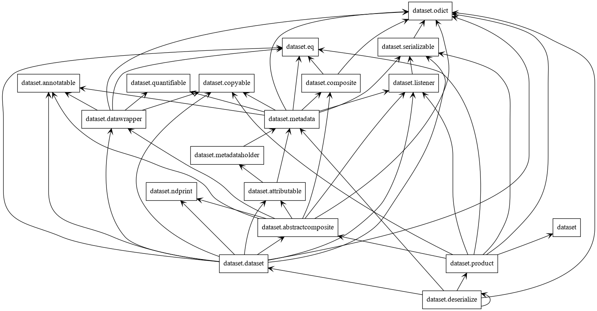
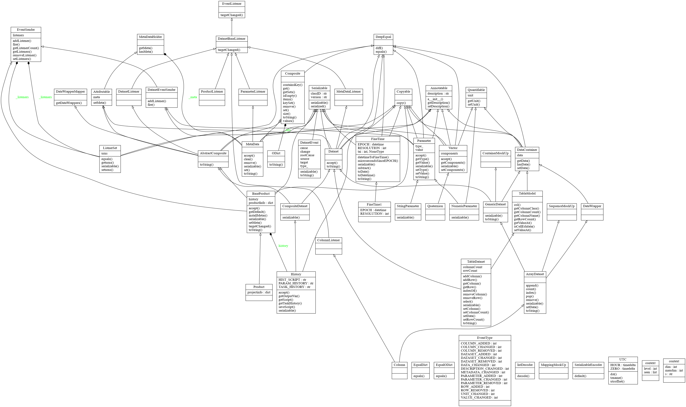
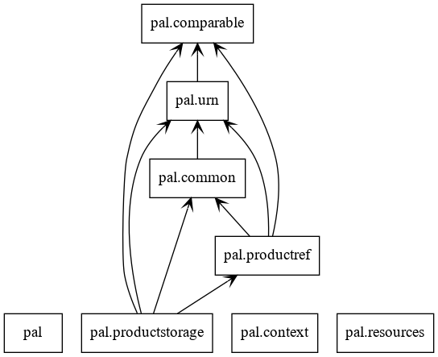
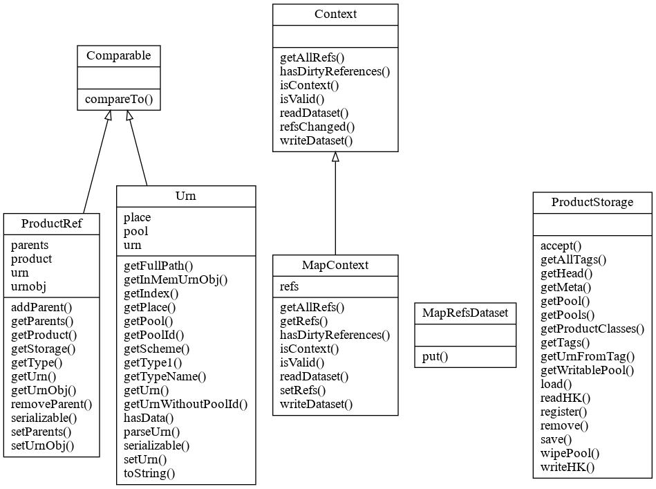
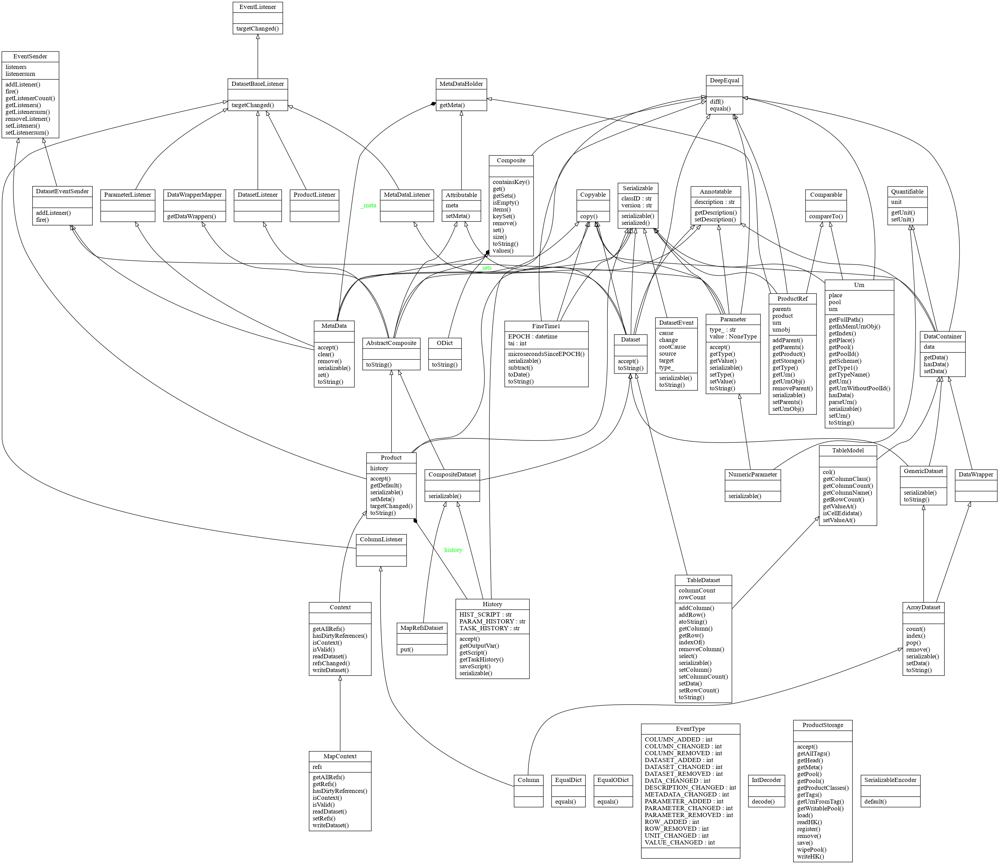

API Reference¶
Contents:
- fdi.dataset package
- Submodules
- fdi.dataset.abstractcomposite module
- fdi.dataset.annotatable module
- fdi.dataset.attributable module
- fdi.dataset.baseproduct module
- fdi.dataset.collectionsMockUp module
- fdi.dataset.composite module
- fdi.dataset.copyable module
- fdi.dataset.dataset module
- fdi.dataset.datatypes module
- fdi.dataset.datawrapper module
- fdi.dataset.deserialize module
- fdi.dataset.eq module
- fdi.dataset.finetime module
- fdi.dataset.listener module
- fdi.dataset.metadata module
- fdi.dataset.metadataholder module
- fdi.dataset.ndprint module
- fdi.dataset.odict module
- fdi.dataset.product module
- fdi.dataset.quantifiable module
- fdi.dataset.serializable module
- fdi.dataset.yaml2python module
- fdi.pal package
- Subpackages
- Submodules
- fdi.pal.common module
- fdi.pal.comparable module
- fdi.pal.context module
- fdi.pal.definable module
- fdi.pal.httpclientpool module
- fdi.pal.localpool module
- fdi.pal.mempool module
- fdi.pal.pnspoolserver module
- fdi.pal.poolmanager module
- fdi.pal.productpool module
- fdi.pal.productref module
- fdi.pal.productstorage module
- fdi.pal.runpnsserver module
- fdi.pal.taggable module
- fdi.pal.urn module
- fdi.pal.versionable module
- fdi.pns package
Diagrams¶
packages_dataset.png
classes_dataset.png
packages_pal.png
packages_pns.png
classes_dataset+pal.png
packages_pns.png

classes_pns.png